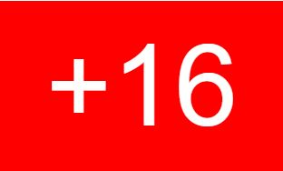

Home
TV Shows
Movies
Lastest
My list
2022 |  6 temporadas
Peaky Blinders es una serie de televisión inglesa de drama histórico
emitida por el canal BBC Two. La serie está protagonizada por Cillian Murphy
y se centra en una familia de gánsteres de Birmingham,
Play
My list